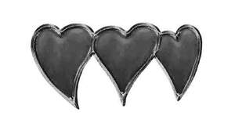

Trade Mark Journal No.2025/035 29 August 2025
UK00004230910 8 July 2025 (14,18,21,24,25,33)

- Class 14
- Watches and clocks; Necklaces [jewellery]; Bracelets [jewelry]; Ankle bracelets; Jewelry chains; jewelry cases, jewelry boxes.
- Class 18
- Beach bags; book bags; change purses; coin purses; duffel bags; gym bags; handbags; knapsacks; key cases; luggage; overnight bags; purses; Textile shopping bags; mesh shopping bags; tote bags; umbrellas; wallets; leather shopping bags; sports bags; travelling bags; backpacks; rucksacks; Belt bags; wallets.
- Class 21
- Plastic coasters; Leather coasters; Coasters, not of paper or textile; Coffee cups, tea cups and mugs; Reusable plastic water bottles sold empty; Reusable stainless steel water bottles sold empty; Aluminum water bottles sold empty; Beverage glassware; Drinking glasses, Shot glasses; Glass mugs; Tumblers for use as drinking glasses; Cocktail glasses; Margarita glasses, Martini glasses; Whisky glasses.
- Class 24
- Towels; Beach Towels; Hooded Towels; Large bath towels; Towel sets; Towels that may be worn as a dress or similar garment; bed sheets; flat bed sheets; fitted bed sheets; sheet sets; Cloth handkerchiefs; Textile wall hangings; Decorative wall hangings of textile; cloth flags; Blanket throws .
- Class 25
- Athletic shoes; baseball caps; caps being headwear; footwear; gloves as clothing; Halloween costumes; hats; head wear; infantwear; jeans; night shirts; night gowns; pants; rainwear; robes; shirts; shoes; skirts; shorts; slippers; sleepwear; socks; headbands; sweat pants; sweat shirts; tank tops; fleece jackets; vests; singlets; Sports jackets; Rainproof jackets; Outer jackets; Athletic jackets; Clothing jackets; sleeved jackets; sleeveless jackets.
- Class 33
- Rum; Ready-to-drink alcoholic beverages, other than beer-based; Spirits [beverages].
LOST HORIZON SPIRITS, LLC
Representative: Sheridans Solicitors LLP